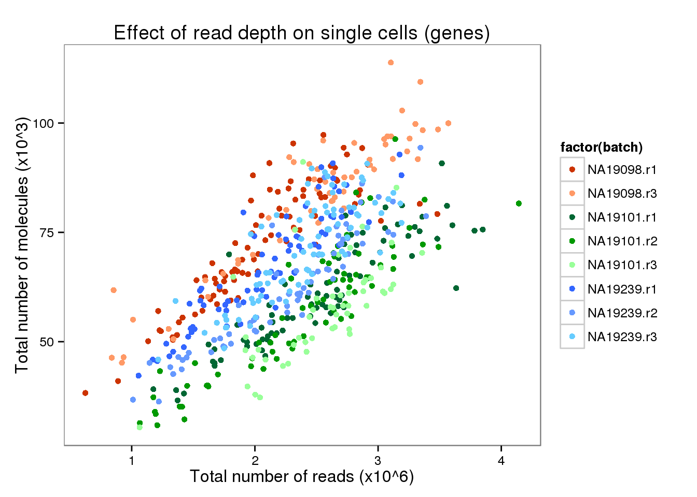
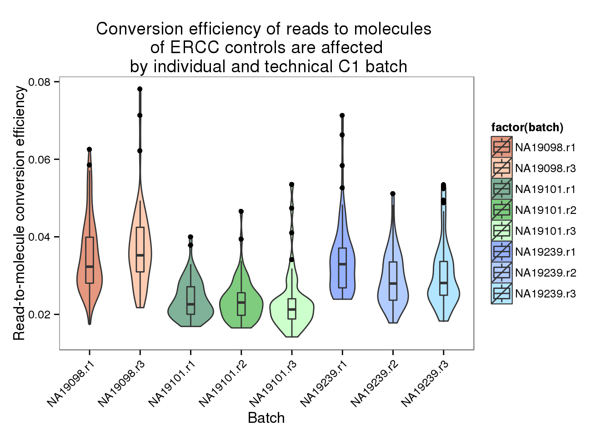
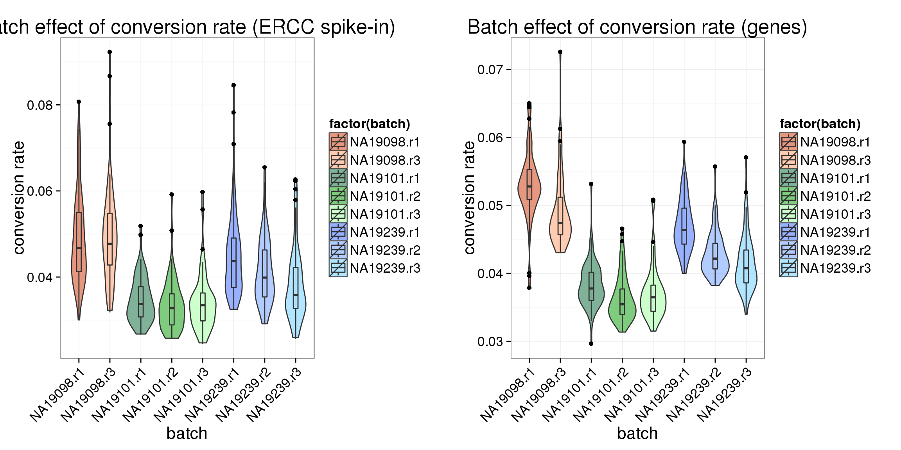
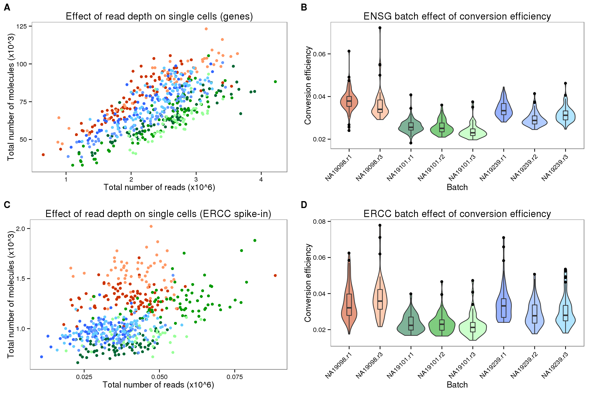
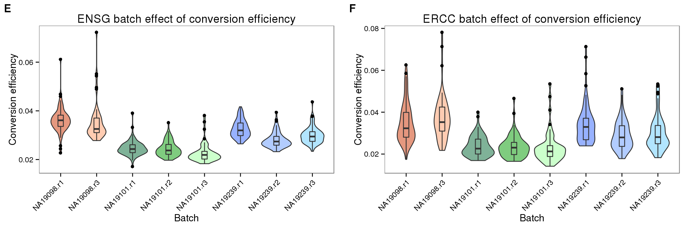

Batch effects of conversion efficiency
Joyce Hsiao & PoYuan Tung
2015-10-23
Last updated: 2016-06-11
Code version: 0242e47aaea33879b60143338a1f1f3232683dc6
Objective
Compute conversion efficiency of each cell using the filerted set of cells. Compare conversion efficiency between batches: is there an individual effect or batch effect of coversion efficiency?
The definition of conversion efficiency: total molecule counts/ total read counts
We will use analysis of variance to test whether conversion rates are significantly different between individuals. Results below are described at an alpha level of .05.
Input
library("dplyr")
library("ggplot2")
library("cowplot")
theme_set(theme_bw(base_size = 12))
theme_update(panel.grid.minor.x = element_blank(),
panel.grid.minor.y = element_blank(),
panel.grid.major.x = element_blank(),
panel.grid.major.y = element_blank())
library("edgeR")
source("functions.R")Input annotation.
anno <- read.table("../data/annotation.txt", header = TRUE,
stringsAsFactors = FALSE)
head(anno) individual replicate well batch sample_id
1 NA19098 r1 A01 NA19098.r1 NA19098.r1.A01
2 NA19098 r1 A02 NA19098.r1 NA19098.r1.A02
3 NA19098 r1 A03 NA19098.r1 NA19098.r1.A03
4 NA19098 r1 A04 NA19098.r1 NA19098.r1.A04
5 NA19098 r1 A05 NA19098.r1 NA19098.r1.A05
6 NA19098 r1 A06 NA19098.r1 NA19098.r1.A06Input filtered read counts.
reads <- read.table("../data/reads-filter.txt", header = TRUE,
stringsAsFactors = FALSE)Input filtered molecule counts.
molecules <- read.table("../data/molecules-filter.txt", header = TRUE,
stringsAsFactors = FALSE)Input list of quality single cells.
quality_single_cells <- scan("../data/quality-single-cells.txt",
what = "character")Keep only the single cells that passed the QC filters.
reads <- reads[, colnames(reads) %in% quality_single_cells]
molecules <- molecules[, colnames(molecules) %in% quality_single_cells]
anno <- anno[anno$sample_id %in% quality_single_cells, ]
stopifnot(dim(reads) == dim(molecules),
nrow(anno) == ncol(reads))Seperate ERCC and endogenous genes
reads_ENSG <- reads[grep("ERCC", rownames(reads), invert = TRUE), ]
reads_ERCC <- reads[grep("ERCC", rownames(reads), invert = FALSE), ]
molecules_ENSG <- molecules[grep("ERCC", rownames(molecules), invert = TRUE), ]
molecules_ERCC <- molecules[grep("ERCC", rownames(molecules), invert = FALSE), ]Reads to molecule conversion efficiency
total_counts_ERCC <- data.frame(total_reads = colSums(reads_ERCC),
total_molecules = colSums(molecules_ERCC))
total_counts_ERCC$conversion <- with(total_counts_ERCC,
total_molecules/total_reads)
summary(total_counts_ERCC) total_reads total_molecules conversion
Min. :10906 Min. : 666 Min. :0.01403
1st Qu.:31564 1st Qu.: 914 1st Qu.:0.02321
Median :38934 Median :1028 Median :0.02740
Mean :39700 Mean :1102 Mean :0.02965
3rd Qu.:46506 3rd Qu.:1276 3rd Qu.:0.03427
Max. :88786 Max. :2035 Max. :0.07813 total_counts_ENSG <- data.frame(total_reads = colSums(reads_ENSG),
total_molecules = colSums(molecules_ENSG))
total_counts_ENSG$conversion <- with(total_counts_ENSG,
total_molecules/total_reads)
summary(total_counts_ENSG) total_reads total_molecules conversion
Min. : 625855 Min. : 30408 Min. :0.01712
1st Qu.:1959019 1st Qu.: 55561 1st Qu.:0.02471
Median :2396897 Median : 65636 Median :0.02882
Mean :2334326 Mean : 66634 Mean :0.02944
3rd Qu.:2727310 3rd Qu.: 78173 3rd Qu.:0.03318
Max. :4143812 Max. :113832 Max. :0.07225 ## create a color palette with one color per individual and different shades for repplicates
great_color <- c("#CC3300", "#FF9966", "#006633", "#009900", "#99FF99", "#3366FF", "#6699FF", "#66CCFF")
depth_plot_ensg <- ggplot(data.frame(total_counts_ENSG,
batch = anno$batch),
aes(x = total_reads/10^6, y = total_molecules/10^3, col = factor(batch))) +
geom_point() +
scale_color_manual(values = great_color) +
labs(x = "Total number of reads (x10^6)",
y = "Total number of molecules (x10^3)",
title = "Effect of read depth on single cells (genes)")
depth_plot_ensg
depth_plot_ercc <- ggplot(data.frame(total_counts_ERCC,
batch = anno$batch),
aes(x = total_reads/10^6, y = total_molecules/10^3, col = factor(batch))) +
geom_point() +
scale_color_manual(values = great_color) +
labs(x = "Total number of reads (x10^6)",
y = "Total number of molecules (x10^3)",
title = "Effect of read depth on single cells (ERCC spike-in)")
depth_plot_ercc
Compare variances of conversion rates between batches
ENSG
convertion_ensg <- ggplot(data.frame(total_counts_ENSG,
batch = anno$batch),
aes(x = factor(batch), y = conversion,
fill = factor(batch)), height = 600, width = 2000) +
geom_violin(alpha = .5) +
geom_boxplot(alpha = .01, width = .2, position = position_dodge(width = .9)) +
scale_fill_manual(values = great_color) +
labs(x = "Batch", y = "Conversion efficiency", title = "ENSG batch effect of conversion efficiency") +
theme(axis.text.x = element_text(hjust=1, angle = 45))
convertion_ensg
*Between individual
For individual \(i\), sample \(j\), we have \(n_{ij}\) cells. Here we compare the per cell conversion rate from molecule count to read count between the three individuals:
\[ Y_{ijk} = \mu_i + b_{ij} + \epsilon_{ijk} \]
where \(i = 1, 2, 3\), \(j = 1, 2, 3\), and \(k = 1, 2, \dots, n_{ij}\).
df_ENSG <- data.frame(total_counts_ENSG,
individual = factor(anno$individual),
replicate = factor(anno$replicate),
batch = factor(anno$batch))
library(lme4)Loading required package: Matrixlmer_ENSG_full <- lmer(conversion ~ individual + (1| individual:replicate),
data = df_ENSG)
lmer_ENSG_null <- lmer(conversion ~ 1 + (1| individual:replicate),
data = df_ENSG)
anova(lmer_ENSG_null, lmer_ENSG_full)refitting model(s) with ML (instead of REML)Data: df_ENSG
Models:
lmer_ENSG_null: conversion ~ 1 + (1 | individual:replicate)
lmer_ENSG_full: conversion ~ individual + (1 | individual:replicate)
Df AIC BIC logLik deviance Chisq Chi Df Pr(>Chisq)
lmer_ENSG_null 3 -4506.8 -4493.8 2256.4 -4512.8
lmer_ENSG_full 5 -4523.8 -4502.2 2266.9 -4533.8 21.077 2 2.649e-05
lmer_ENSG_null
lmer_ENSG_full ***
---
Signif. codes: 0 '***' 0.001 '**' 0.01 '*' 0.05 '.' 0.1 ' ' 1*For each individual, between batches.
for (i in 1:length(unique(anno$individual))) {
print(unique(anno$individual)[i])
select_individual <- with(anno, individual == unique(individual)[i])
print( summary(aov(conversion ~ batch,
data = df_ENSG[select_individual, ]) ) )
}[1] "NA19098"
Df Sum Sq Mean Sq F value Pr(>F)
batch 1 0.000035 3.474e-05 0.88 0.35
Residuals 140 0.005528 3.949e-05
[1] "NA19101"
Df Sum Sq Mean Sq F value Pr(>F)
batch 2 0.000125 6.250e-05 5.722 0.00384 **
Residuals 198 0.002163 1.092e-05
---
Signif. codes: 0 '***' 0.001 '**' 0.01 '*' 0.05 '.' 0.1 ' ' 1
[1] "NA19239"
Df Sum Sq Mean Sq F value Pr(>F)
batch 2 0.000750 3.75e-04 32.11 5.99e-13 ***
Residuals 218 0.002546 1.17e-05
---
Signif. codes: 0 '***' 0.001 '**' 0.01 '*' 0.05 '.' 0.1 ' ' 1ERCC
convertion_ercc <- ggplot(data.frame(total_counts_ERCC,
batch = anno$batch),
aes(x = factor(batch), y = conversion,
fill = factor(batch)), height = 600, width = 2000) +
geom_violin(alpha = .5) +
geom_boxplot(alpha = .01, width = .2, position = position_dodge(width = .9)) +
scale_fill_manual(values = great_color) +
labs(x = "Batch", y = "Conversion efficiency", title = "ERCC batch effect of conversion efficiency") +
theme(axis.text.x = element_text(hjust=1, angle = 45))
convertion_ercc
- Between individuals
df_ERCC <- data.frame(total_counts_ERCC,
individual = factor(anno$individual),
replicate = factor(anno$replicate),
batch = factor(anno$batch))
library(lme4)
lmer_ERCC_full <- lmer(conversion ~ individual + (1| individual:replicate),
data = df_ERCC)
lmer_ERCC_null <- lmer(conversion ~ 1 + (1| individual:replicate),
data = df_ERCC)
anova(lmer_ERCC_null, lmer_ERCC_full)refitting model(s) with ML (instead of REML)Data: df_ERCC
Models:
lmer_ERCC_null: conversion ~ 1 + (1 | individual:replicate)
lmer_ERCC_full: conversion ~ individual + (1 | individual:replicate)
Df AIC BIC logLik deviance Chisq Chi Df Pr(>Chisq)
lmer_ERCC_null 3 -3811.1 -3798.1 1908.5 -3817.1
lmer_ERCC_full 5 -3827.1 -3805.4 1918.5 -3837.1 19.994 2 4.553e-05
lmer_ERCC_null
lmer_ERCC_full ***
---
Signif. codes: 0 '***' 0.001 '**' 0.01 '*' 0.05 '.' 0.1 ' ' 1*For each individual, between batches.
for (i in 1:length(unique(anno$individual))) {
print(unique(anno$individual)[i])
select_individual <- with(anno, individual == unique(individual)[i])
print( summary(aov(conversion ~ batch,
data = df_ERCC[select_individual, ]) ) )
}[1] "NA19098"
Df Sum Sq Mean Sq F value Pr(>F)
batch 1 0.000181 1.813e-04 1.823 0.179
Residuals 140 0.013922 9.944e-05
[1] "NA19101"
Df Sum Sq Mean Sq F value Pr(>F)
batch 2 0.000008 4.190e-06 0.125 0.883
Residuals 198 0.006637 3.352e-05
[1] "NA19239"
Df Sum Sq Mean Sq F value Pr(>F)
batch 2 0.001112 5.56e-04 8.019 0.000436 ***
Residuals 218 0.015114 6.93e-05
---
Signif. codes: 0 '***' 0.001 '**' 0.01 '*' 0.05 '.' 0.1 ' ' 1Summary plots
library(gridExtra)
grid.arrange(
ggplot(data.frame(total_counts_ERCC,
batch = anno$batch),
aes(x = factor(batch), y = conversion,
fill = factor(batch)), height = 600, width = 2000) +
geom_violin(alpha = .5) +
geom_boxplot(alpha = .01, width = .2, position = position_dodge(width = .9)) +
scale_fill_manual(values = great_color) +
labs(x = "Batch", y = "Conversion rate", title = "Batch effect of conversion rate (ERCC spike-in)") +
theme(axis.text.x = element_text(hjust=1, angle = 45))
,
ggplot(data.frame(total_counts_ENSG,
batch = anno$batch),
aes(x = factor(batch), y = conversion,
fill = factor(batch)), height = 600, width = 2000) +
geom_violin(alpha = .5) +
geom_boxplot(alpha = .01, width = .2, position = position_dodge(width = .9)) +
scale_fill_manual(values = great_color) +
labs(x = "Batch", y = "Conversion rate", title = "Batch effect of conversion rate (genes)") +
theme(axis.text.x = element_text(hjust=1, angle = 45)),
ncol = 2
)
plot_grid(depth_plot_ensg + theme(legend.position = "none"),
convertion_ensg + theme(legend.position = "none"),
depth_plot_ercc + theme(legend.position = "none"),
convertion_ercc + theme(legend.position = "none"),
labels = LETTERS[1:4])
plot_grid(convertion_ensg + theme(legend.position = "none"),
convertion_ercc + theme(legend.position = "none"),
labels = LETTERS[5:6])
Session information
sessionInfo()R version 3.2.0 (2015-04-16)
Platform: x86_64-unknown-linux-gnu (64-bit)
locale:
[1] LC_CTYPE=en_US.UTF-8 LC_NUMERIC=C
[3] LC_TIME=en_US.UTF-8 LC_COLLATE=en_US.UTF-8
[5] LC_MONETARY=en_US.UTF-8 LC_MESSAGES=en_US.UTF-8
[7] LC_PAPER=en_US.UTF-8 LC_NAME=C
[9] LC_ADDRESS=C LC_TELEPHONE=C
[11] LC_MEASUREMENT=en_US.UTF-8 LC_IDENTIFICATION=C
attached base packages:
[1] stats graphics grDevices utils datasets methods base
other attached packages:
[1] gridExtra_2.0.0 lme4_1.1-10 Matrix_1.2-1 edgeR_3.10.2
[5] limma_3.24.9 cowplot_0.3.1 ggplot2_1.0.1 dplyr_0.4.2
[9] knitr_1.10.5
loaded via a namespace (and not attached):
[1] Rcpp_0.12.4 formatR_1.2 nloptr_1.0.4 plyr_1.8.3
[5] bitops_1.0-6 tools_3.2.0 digest_0.6.8 evaluate_0.7
[9] gtable_0.1.2 nlme_3.1-120 lattice_0.20-31 DBI_0.3.1
[13] yaml_2.1.13 parallel_3.2.0 proto_0.3-10 httr_0.6.1
[17] stringr_1.0.0 grid_3.2.0 R6_2.1.1 rmarkdown_0.6.1
[21] minqa_1.2.4 reshape2_1.4.1 magrittr_1.5 scales_0.4.0
[25] htmltools_0.2.6 MASS_7.3-40 splines_3.2.0 assertthat_0.1
[29] colorspace_1.2-6 labeling_0.3 stringi_1.0-1 RCurl_1.95-4.6
[33] munsell_0.4.3